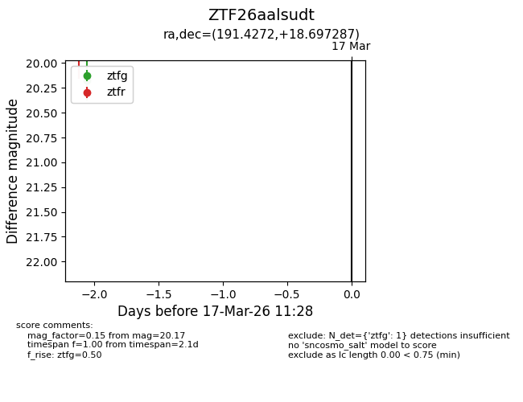
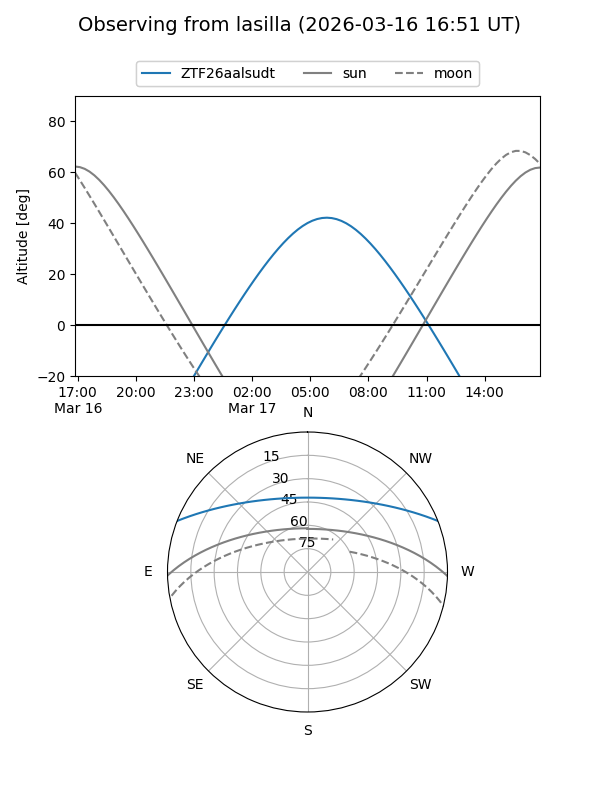
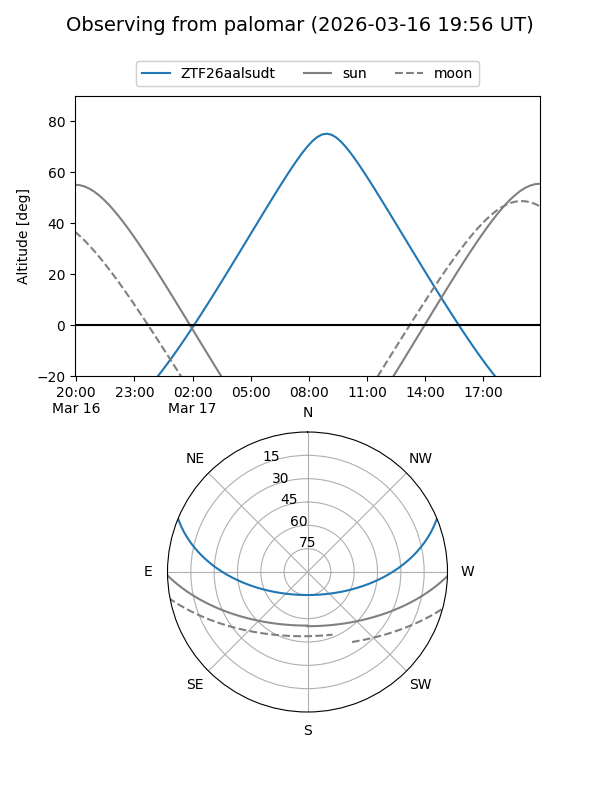

ZTF26aalsudt
Target ZTF26aalsudt at 2026-03-17 11:30
Aliases and brokers:
FINK: link
Lasair: link
ALeRCE: link
alt names
ZTF26aalsudt (ztf,fink_ztf)
Coordinates:
equatorial (ra, dec) = 191.4272,+18.69729
equatorial (HMS+DMS) = 12:45:42.54,+18:41:50.23
galactic (l, b) = (293.7508,+81.46673)
Flags:
Photometry:
last ztfg=20.17
1 ztfg detections
Lightcurve

Visibility


Additional plots